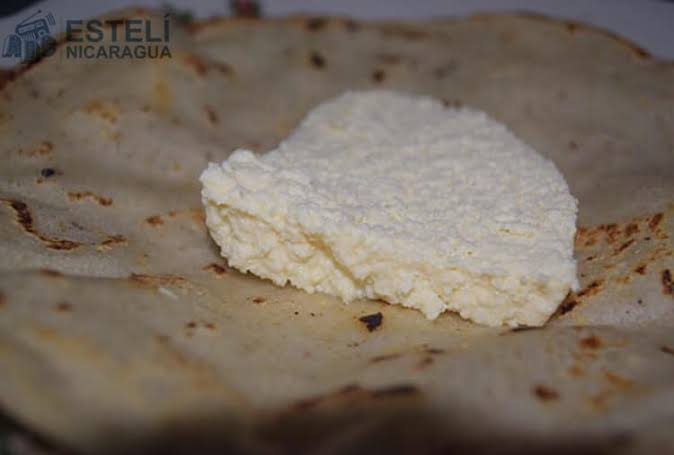

Tortilla con queso

Tortilla con queso is a nicaraguan dish that consists of queso wrapped in a corn tortilla.
It is delicious, quick to make, and expensive.
Ingredients:
- Cheese from the venta
- Tortilla from the tortillera
How to make:
- Cut the cheese. The tortilla can't cover an entire pound of cheese. Cut it into thin, long, rectangles
- Open the tortilla.How else would you wrap the cheese with the tortilla
- Place the cheese in a straight line.On the center of the tortilla you have to make a row of the cheese that you cut
- Wrap the cheese.Roll the tortilla with the cheese to make a nica taco shape, but with cheese!
- Enjoy! Eat that damn tortilla
Home